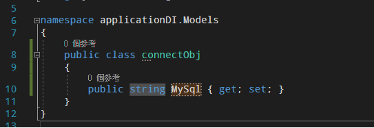
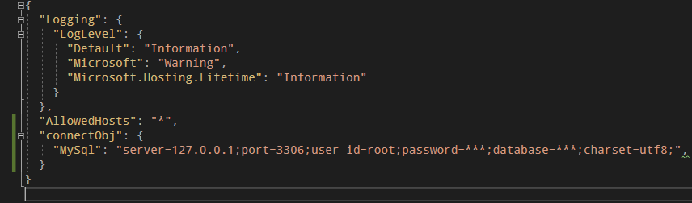
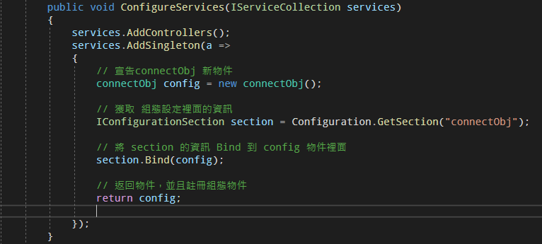
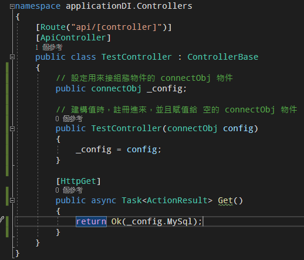
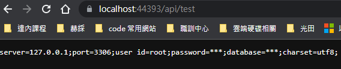
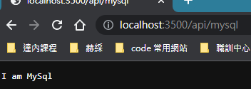

說明：
在 appsettings.json 自己所需要的參數 避免在邏輯控制層曝露自己的帳號密碼, 只有在邏輯控制啟動時注入 到 自己寫好的 DTO裡面 並且實例化
第一種 抓取方法 IOption
使用方法：
- 1. 先在 appsettings.json 設定自己需要的 參數 例: 設定了一個 mysql 裡面的 connectionstring
"AllowedHosts": "*",
"MySQL": {
"ConnectionString": "server=127.0.0.1;userid=root;password=123456;database=django;"
},
- 2. 然後先寫好自己要注入的DTO
namespace test2
{
public class servermq
{
public string? ConnectionString { get; set; }
}
}
- 3. 然後在 Program.cs 裡面添加 這段 (基本上 appsettings.json 獲取裡面的資訊都是用這方式)
builder.Services.Configure<servermq>(builder.Configuration.GetSection("MySQL"));
- 4. 然後在 Controller 那裡 先幫 創好 一個變量 , 然後在他的建構函數下 添加這段.
[ApiController]
[Route("[Controller]")]
public class UserController : Controller
{
private readonly servermq _options;
//建構函數
public UserController(IOptions<servermq> options)
{
// 啟動時注入 並且把 值 賦予到 創好的變量裡面
_options = options.Value;
}
}
第二種 擺脫 IOption，直接DI註冊組態物件(推薦)(範例版本:Asp.net 3.1)
說明：
- 消除對 IOptions 的依賴
- 使用內建的 DI 直接註冊組態物件
- 需要藉由 IConfiguration 介面所提供的 !Bind! 方法
教學：
- 先在Models建立一個 application.json 接值使用的物件 
- 在 application.json 設置connectStr 
- 在 Startup.cs 的 ConfigureServices 設置 
- 在 controller 取得註冊物件，並且回傳 MySql 的 connectStr 
- 回傳結果，展示在頁面，正常都是在 controller 裡面使用 
第三種 抓取方法 IConfiguration(範例版本:Asp.net 3.1)
- 一樣 先在 appsettings.json 裡面設置要獲取的值

- 使用 IConfiguration 介面 去獲取 appsettings 裡面的資訊
- 預設一個空的 IConfiguration
- 並且在建構值裡面 將 實體物件賦予給它

- 利用 鍵值對的方式去抓取

- 輸出結果 